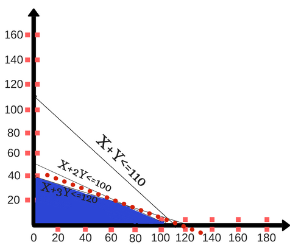

Linear
Programming in R
What is Linear Programming?
Linear programming (LP, also called linear optimization) is a method to achieve the best outcome (such as maximum profit or lowest cost) in a mathematical model whose requirements are represented by linear relationships. Linear programming is a special case of mathematical programming (mathematical optimization).
In general, LPP is an approach to come up with the best possible outcome using mathematical model to identify extreme min or max approach to find the linear relationship with the dataset. Which help us optimizing and help finding a feasible point or region for the problem.
Basic Terminology
Optimization: it is an objective function explaining what you want min or max?
Linear Objective Function: It is normally quantitative variables or features like revenue, Profit, distance etc. from which we are going to optimize generally represented by:
Optimization (Min or Max) Z = C1X1+C2x2…CnXn
Where Z is the measure of performance, which is a function of x1,x2,…xn.. Quantities C1,c2…cn(Parameters).
Linear Constraint: they are the limitation for the model. They are normally resources like machine, raw materials, space, money etc...
Decision Variables: The decision variables are the variables which will decide my output. They represent my ultimate solution. To solve any problem, we first need to identify the decision variables. For the above example, the total number of units for A and B denoted by X & Y respectively are my decision variables.
Non-negativity restriction: For all linear programs, the decision variables should always take non-negative values. Which means the values for decision variables should be greater than or equal to 0.
In layman language we have to just plot the linear equation on a graph and draw lines and find the feasible region it is the simplest approach for a LPP. Which is a graphical approach/method for LPP.
Formulation of Linear Programming Problem
Let us look at the steps of defining a Linear Programming problem generically:
Identify the decision variables
Write the objective function
Mention the constraints
Explicitly state the non-negativity restriction
For a problem to be a linear programming problem, the decision variables, objective function and constraints all have to be linear functions.
If the all the three conditions are satisfied, it is called a Linear Programming Problem.
Solve Linear Programs by Graphical Method
A linear program can be solved by multiple methods. In this section, we are going to look at the Graphical method for solving a linear program. This method is used to solve a two variable linear program. If you have only two decision variables, you should use the graphical method to find the optimal solution.
A graphical method involves formulating a set of linear inequalities subject to the constraints. Then the inequalities are plotted on a X-Y plane. Once we have plotted all the inequalities on a graph the intersecting region gives us a feasible region. The feasible region explains what all values our model can take. And it also gives us the optimal solution.
Let’s understand this with the help of an example.
Example: A farmer has recently acquired a 110 hectares’ piece of land. He has decided to grow Wheat and barley on that land. Due to the quality of the sun and the region’s excellent climate, the entire production of Wheat and Barley can be sold. He wants to know how to plant each variety in the 110 hectares, given the costs, net profits and labour requirements according to the data shown below:
|
Variety |
Cost (price/Hec) |
Net Profit(price/Hec) |
Man-days/Hec |
|
Wheat |
100 |
50 |
10 |
|
Barley |
200 |
120 |
30 |
The farmer has a budget of US$10,000 and an availability of 1,200 man-days during the planning horizon. Find the optimal solution and the optimal value.
Solution: To solve this problem, first we going to formulate our linear program.
Formulation of Linear Problem
Step 1: Identify the decision variables
The total area for growing Wheat = X (in hectares)
The total area for growing Barley = Y (in hectares)
X and Y are my decision variables.
Step 2: Write the objective function
Since the production from the entire land can be sold in the market. The farmer would want to maximize the profit for his total produce. We are given net profit for both Wheat and Barley. The farmer earns a net profit of US$50 for each hectare of Wheat and US$120 for each Barley.
Our objective function (given by Z) is, Max Z = 50X + 120Y
Step 3: Writing the constraints
It is given that the farmer has a total budget of US$10,000. The cost of producing Wheat and Barley per hectare is also given to us. We have an upper cap on the total cost spent by the farmer. So our equation becomes:
100X + 200Y ≤ 10,000
The next constraint is, the upper cap on the availability on the total number of man-days for planning horizon. The total number of man-days available are 1200. As per the table, we are given the man-days per hectare for Wheat and Barley.
10X + 30Y ≤ 1200
The third constraint is the total area present for plantation. The total available area is 110 hectares. So the equation becomes,
X + Y ≤ 110
Step 4: The non-negativity restriction
The values of X and Y will be greater than or equal to 0. This goes without saying.
X ≥ 0, Y ≥ 0
We have formulated our linear program. It’s time to solve it.
Solving a LP through Graphical method
Since we know that X, Y ≥ 0. We will consider only the first quadrant.
To plot for the graph for the above equations, first I will simplify all the equations.
100X + 200Y ≤ 10,000 can be simplified to X + 2Y ≤ 100 by dividing by 100.
10X + 30Y ≤ 1200 can be simplified to X + 3Y ≤ 120 by dividing by 10.
The third equation is in its simplified form, X + Y ≤ 110.
Plot the first 2 lines on a graph in first quadrant (like shown below)
The optimal feasible solution is achieved at the point of intersection where the budget & man-days constraints are active. This means the point at which the equations X + 2Y ≤ 100 and X + 3Y ≤ 120 intersect gives us the optimal solution.
The values for X and Y which gives the optimal solution is at (60,20).
To maximize profit, the farmer should produce Wheat and Barley in 60 hectares and 20 hectares of land respectively.
The maximum profit the company will gain is, Max Z = 50 * (60) + 120 * (20) = US$5400

Figure 1-graphical Method
Applications of Linear Programming
Linear programming and Optimization are used in various industries. Manufacturing and service industry uses linear programming on a regular basis. In this section, we are going to look at the various applications of Linear programming.
Manufacturing industries use linear programming for analysing their supply chain operations. Their motive is to maximize efficiency with minimum operation cost. As per the recommendations from the linear programming model, the manufacturer can reconfigure their storage layout, adjust their workforce and reduce the bottlenecks.
Linear programming is also used in organized retail for shelf space optimization. Since the number of products in the market have increased in leaps and bounds, it is important to understand what does the customer want. Optimization is aggressively used in stores like Reliance, Big Bazaar, etc. The products in the store are placed strategically keeping in mind the customer shopping pattern. The objective is to make it easy for a customer to locate & select the right products. This is with subject to constraints like limited shelf space, the variety of products, etc.
Well,
the applications of Linear programming don’t end here. There are
many more applications of linear programming in real-world like
applied by Shareholders,
Sports, Stock Markets,
etc. Go on and explore further.